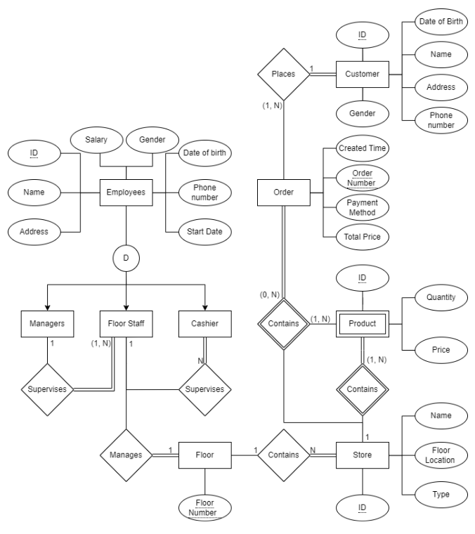
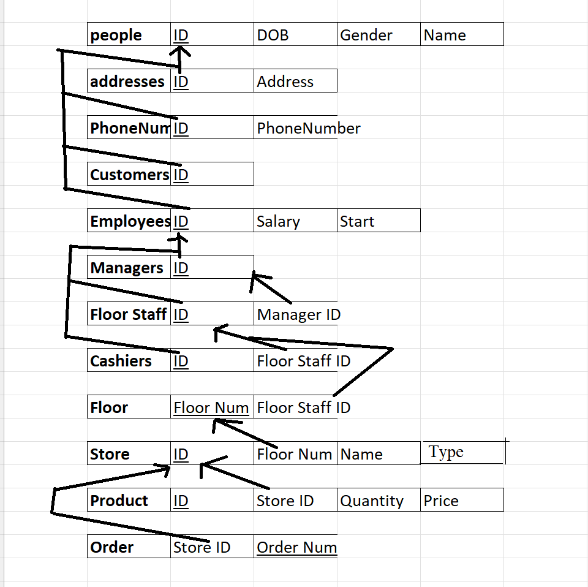
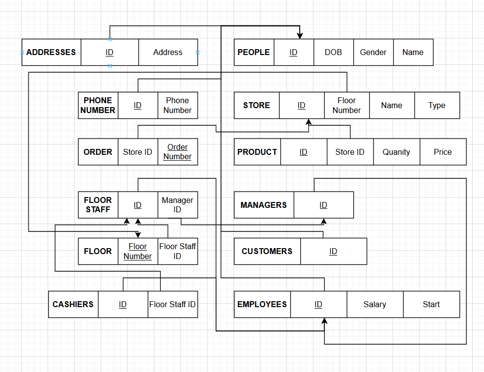

Wilson Lair
Senior Computer Science Major at the University of Texas at Dallas
Report on Shopping Mall Database Project
Executive Summary
This project involved the design and implementation of a relational database management system for the Happiness Shopping Mall. Leveraging Oracle DBMS, the project demonstrated proficiency in advanced database design techniques, including:
- Entity-Relationship Modeling (EER): Designed an optimized schema with superclass/subclass hierarchies to reduce redundancy and improve scalability.
- Normalization: Ensured data consistency and integrity through rigorous application of 3NF principles and dependency analysis.
- SQL Development: Created robust database objects, including tables, views, and stored procedures, to support real-world shopping mall operations.
- Complex Data Relationships: Modeled intricate business rules, such as employee supervision hierarchies, floor management, dynamic store schedules, and multi-tiered product pricing.
- Data Analytics Readiness: Designed schema extensions for tracking KPIs like customer purchase frequency and employee performance metrics.
This project demonstrated practical expertise in database systems, including system design, SQL programming, and problem-solving for real-world business scenarios.
Project Description
The Happiness Shopping Mall would like one relational database to store the information about their management system to be able to carry out their work in an organized way. They have some major modules such as Person (Employee and Customer), Products and Stores.
In the system, there are Employees and Customers. Details of a Customer such as Customer ID, Name (First, Middle, Last), Address, Gender, Date of Birth and Phone numbers (one person may have more than one phone number) are recorded.
Each employee has unique Employee ID. The Employee ID must have the exact format “EXXX”, where X is a number from 0-9. More information of an Employee such as Name (First, Middle, Last), Salary, Address, Gender, Date of Birth and Phone number are recorded. Employee Must be at least 18 or older. Employee is further classified as Manager, Floor Staff and Cashier. The start date of the designation of each employee is stored. A cashier is supervised by a floor staff, and a floor staff is supervised by a Manager. A floor staff is responsible for managing the stores at a floor. Each floor staff can only manage one floor for each day, but may be assigned to manage different floors on different days. A floor managing log is created for storing such information.
There are many Stores located on different floors. Information about a store such as store ID, store name, store floor location and store type (Clothes, Food, Drink, Book and so on) are recorded. Each store opens and closes at specific times (may be different from Monday to Sunday) following a schedule table. The manager of the mall can adjust the schedule table. Stores sell various Products. A product has an ID that is only unique in each store, different stores may have different ID for the same product, and other information (such as name and description). A product may be sold in different stores at different prices. Each store has their own records about products, such as the quantity of the product in stock.
Customers can place orders in stores. Each store will maintain the detailed information about the order. Each order has unique order ID and the created time of the order is recorded. Each order may contain multiple number and multiple kinds of products. Each order also records the prices of these products and the order subtotal. Customers make the Payment of their orders with Cashiers. Payment information such as ID, payment time, method (cash, credit or debit card, membership card), amount and other information are recorded.
Project Questions
Q: Is the ability to model superclass/subclass relationships likely to be important in the management system like above? Why or why not?
A: Yes. For example, there are multiple types of employees, such as managers, floor staff, and cashiers, all of whom share most of the same attributes such as salary, dob, gender, etc. Therefore, it would be helpful in our EER model to create an Employee superclass which contains all those attributes, and anything unique to a certain employee, such as the floor number that a floor staff manages, would be represented as an attribute in the Floor Staff class’s relationship with a Floor entity. Without these superclass/subclass relationships, there would be redundancies in our model in which the reoccurring attributes would have to be mentioned several times where with a superclass/subclass relationship we only need to write those attributes once.
Q: Can you think of 5 more business rules (other than those explicitly described above) that are likely to be used in a shopping mall environment? Add your rules to the above requirement to be implemented.
A:
- Information for terminated employees (previously, but not currently employed people) would probably exist. If this were a requirement, then there should be an additional attribute belonging to the Employee superclass which says if a person is currently employed or not.
- Because store hours can vary based on day of the week or day of the year, store_times should likely be its own weak entity with total participation in the entity set for stores, withits attributes depending on which store it is relating to.
- An attribute of product which is not mentioned as a requirement but might be is the brand name of the product purchased. This should be relevant to stores because store owners might want to use sales numbers based on certain brand names to determine which they should purchase to fill their inventory (should they have to choose between two different brands which offer the same product).
- An attribute of Customer that might be desirable is their # of purchases (within the entire mall AND within a store).
- A supervisor might have a requirement that they've worked a certain amount of time in a subordinate role before promotion. Additionally, this means hrs_worked and also performance_grade might be necessary attributes of the Employee type, which could be used when management is choosing who to promote, fire, or leave in their current position.
Q: Justify using a Relational DBMS like Oracle for this project (Successfully design a relational database system, show the design in final report).
A: Phase III c-e should illustrate why a DBMS is helpful in creating this system. A DBMS not only allows our database to easily be updated after creation, but can accommodate different views for different levels of Employee.
Database Design Visualizations
EER Diagram
3NF Forms
Dependency Diagram
SQL
Use the Create Table statement to create the following tables:
USE DB_Project;
-- Create Customer Table
CREATE TABLE `Customer` (
customer_ID INT NOT NULL AUTO_INCREMENT,
first_name VARCHAR(50),
last_name VARCHAR(50),
gender VARCHAR(1),
address VARCHAR(100),
phone_number INT(10),
date_of_birth DATE,
PRIMARY KEY (customer_ID)
);
-- Create Order Table
CREATE TABLE `Order` (
order_number INT NOT NULL AUTO_INCREMENT,
created_time DATETIME DEFAULT CURRENT_TIMESTAMP,
total_price DECIMAL,
payment_method_ID INT NOT NULL,
customer_ID INT,
cashier_ID INT NOT NULL,
PRIMARY KEY (order_number),
FOREIGN KEY (payment_method_ID)
REFERENCES `Payment Method` (payment_method_ID),
FOREIGN KEY (customer_ID)
REFERENCES `Customer` (customer_ID),
FOREIGN KEY (cashier_ID)
REFERENCES `Employee` (employee_ID)
);
-- Create Payment Method Table
CREATE TABLE `Payment Method` (
payment_method_ID INT NOT NULL AUTO_INCREMENT,
last_four_digits INT(4),
card_type VARCHAR(50),
PRIMARY KEY (payment_method_ID)
);
-- Create Product Table
CREATE TABLE `Product` (
product_ID INT NOT NULL AUTO_INCREMENT,
product_name VARCHAR(50),
product_quantity INT,
price DECIMAL(10,2),
PRIMARY KEY (product_ID)
);
-- Create a junction table to show the relationship between product, order, and store
CREATE TABLE `Order Product` (
order_number INT NOT NULL,
product_ID INT NOT NULL,
store_ID INT NOT NULL,
quantity INT,
PRIMARY KEY (order_number, product_ID, store_ID),
FOREIGN KEY (order_number)
REFERENCES `Order` (order_number)
ON DELETE CASCADE,
FOREIGN KEY (product_ID)
REFERENCES `Product` (product_ID)
ON DELETE CASCADE,
FOREIGN KEY (store_ID)
REFERENCES `Store` (store_ID)
ON DELETE CASCADE
);
-- Create a junction table to show the replationship between store and product
CREATE TABLE `Store Product` (
product_ID INT NOT NULL,
store_ID INT NOT NULL,
quantity INT,
PRIMARY KEY (product_ID, store_ID),
FOREIGN KEY (product_ID)
REFERENCES `Product` (product_ID)
ON DELETE CASCADE,
FOREIGN KEY (store_ID)
REFERENCES `Store` (store_ID)
ON DELETE CASCADE
);
-- Create Store Table
CREATE TABLE `Store` (
store_ID INT NOT NULL AUTO_INCREMENT,
store_type VARCHAR(20),
floor_ID INT,
store_name VARCHAR(50),
PRIMARY KEY (store_ID),
FOREIGN KEY (floor_ID)
REFERENCES `Floor` (floor_ID)
);
-- Create Floor Table
CREATE TABLE `Floor` (
floor_ID INT NOT NULL AUTO_INCREMENT,
PRIMARY KEY (floor_ID)
);
-- Create Schedule Table
CREATE TABLE Schedule (
schedule_ID INT NOT NULL AUTO_INCREMENT,
store_ID INT NOT NULL,
day_of_week ENUM('Monday', 'Tuesday', 'Wednesday', 'Thursday', 'FrIDay', 'Saturday', 'Sunday') NOT NULL,
opening_time TIME NOT NULL,
closing_time TIME NOT NULL,
PRIMARY KEY (schedule_ID),
FOREIGN KEY (store_ID)
REFERENCES `Store` (store_ID)
);
-- Create Floor Maintaing Log
CREATE TABLE `Floor Log` (
log_ID INT NOT NULL AUTO_INCREMENT,
floor_ID INT NOT NULL,
floor_staff_ID INT NOT NULL,
log_date DATE NOT NULL,
PRIMARY KEY (log_ID),
FOREIGN KEY (floor_staff_ID)
REFERENCES Employee (employee_ID),
FOREIGN KEY (floor_ID)
REFERENCES Floor (floor_ID)
);
-- Create Employee Table
CREATE TABLE Employee (
employee_ID INT NOT NULL AUTO_INCREMENT,
first_name VARCHAR(50),
last_name VARCHAR(50),
date_of_birth DATE,
start_date DATE,
SSN VARCHAR(9),
address VARCHAR(100),
salary DECIMAL(10 , 2 ),
phone_number VARCHAR(10),
supervisor_ID INT,
employee_type ENUM('Manager', 'Floor Staff', 'Cashier'),
PRIMARY KEY (employee_ID),
FOREIGN KEY (supervisor_ID)
REFERENCES Employee (employee_ID)
);
Use the Create View statement to create the following views:
Popular-Product: This view returns the information of the most popular product that been sold the most in the whole mall in past 1 month.
CREATE VIEW `popular_product` AS
SELECT
`p`.`product_ID` AS `product_ID`,
`p`.`product_name` AS `product_name`,
SUM(`op`.`quantity`) AS `total_quantity`
FROM
((`product` `p`
JOIN `order product` `op` ON ((`op`.`product_id` = `p`.`product_ID`)))
JOIN `order` `o` ON ((`o`.`order_number` = `op`.`order_number`)))
WHERE
(`o`.`created_time` >= (NOW() - INTERVAL 1 MONTH))
GROUP BY `p`.`product_ID` , `p`.`product_name`
ORDER BY `total_quantity` DESC
LIMIT 1
Gold-Store: This view returns the information of the store that has the most number of distinct customers that placed order in past 1 month.
CREATE VIEW `gold_store` AS
SELECT
`s`.`store_ID` AS `store_ID`,
`s`.`store_name` AS `store_name`,
COUNT(DISTINCT `o`.`customer_ID`) AS `number_of_customers`
FROM
((`store` `s`
JOIN `order product` `op` ON ((`op`.`store_id` = `s`.`store_ID`)))
JOIN `order` `o` ON ((`o`.`order_number` = `op`.`order_number`)))
WHERE
(`o`.`created_time` >= (NOW() - INTERVAL 1 MONTH))
GROUP BY `s`.`store_ID` , `s`.`store_type`
ORDER BY `number_of_customers` DESC
LIMIT 1
Top-Quarter-Cashier: This view returns the information of the cashier who have dealt with the most number of orders in the past 3 months.
CREATE VIEW `top_quarter_cashier` AS
SELECT
`e`.`employee_ID` AS `employee_ID`,
`e`.`first_name` AS `first_name`,
`e`.`last_name` AS `last_name`,
COUNT(`o`.`order_number`) AS `number_of_orders`
FROM
(`employee` `e`
JOIN `order` `o` ON ((`e`.`employee_ID` = `o`.`cashier_ID`)))
WHERE
(`o`.`created_time` >= (NOW() - INTERVAL 3 MONTH))
GROUP BY `e`.`employee_ID`
ORDER BY `number_of_orders` DESC
LIMIT 1